どうやって選んだか
ウェザーニュースに載っている京都府・滋賀県の紅葉名所121か所の「いまの色づき」と「見頃・落葉はじめの予想日」（11月24日時点）を全部見て、30日にまだ落葉が始まっていない所、または30日までに見頃に入る所だけを残しました。30日は月曜日なので、平日ダイヤで動けて、月曜に休みでない所にしています。
天気予報（24日時点）：30日の京都は晴れ、最高16℃・最低4〜5℃。27日（金）・28日（土）は雨の予報なので、落葉が少し早まるかもしれません。前日にもう一度確かめます。
5つのコースをくらべる
| コース | 紅葉の確実さ | 夜の紅葉 | 烏丸に帰る | 交通費 | 拝観料のめやす |
|---|
| A東山 | ★★★ | 永観堂（または清水寺の最終日） | 19:19 | 860円 | 約4,300円 |
| B一乗寺・鷹峯・北野 | ★★☆ | 北野天満宮もみじ苑 | 18:36 | 2,040円 | 約4,600円 |
| C嵯峨野 | ★★☆ | なし | 16:24 | 470円 | 約1,800円＋要確認 |
| D宇治 | ★★☆ | なし | 16:15 | 1,240円 | 約2,200円 |
| E滋賀（三井寺・彦根・教林坊） | ★★★ | 教林坊 | 20:22 | 3,040円＋タクシー | 約2,800円 |
交通費・拝観料は大人1人分（交通費はICカード）。時刻はYahoo!路線情報で「11月30日（月）」を指定して調べました。
Aいちばん確実・王道
東山：東福寺 → 清水寺 → 高台寺 → 南禅寺 → 夜の永観堂
京都の紅葉の代表をまとめて。どこも見頃のまっ最中か、見頃に入ったばかり。夜は永観堂のライトアップで締め。歩く距離は長め。
- 出発
- 烏丸 9:06
- 帰り
- 烏丸 19:19着
- 交通費
- 860円
- 拝観料
- 約4,300円
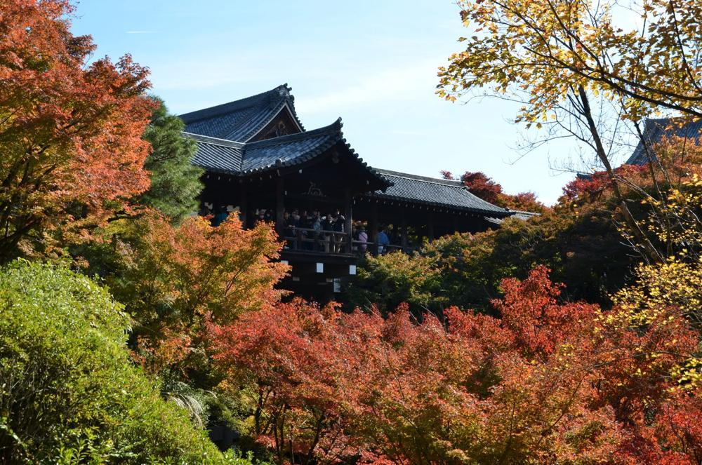
東福寺・通天橋
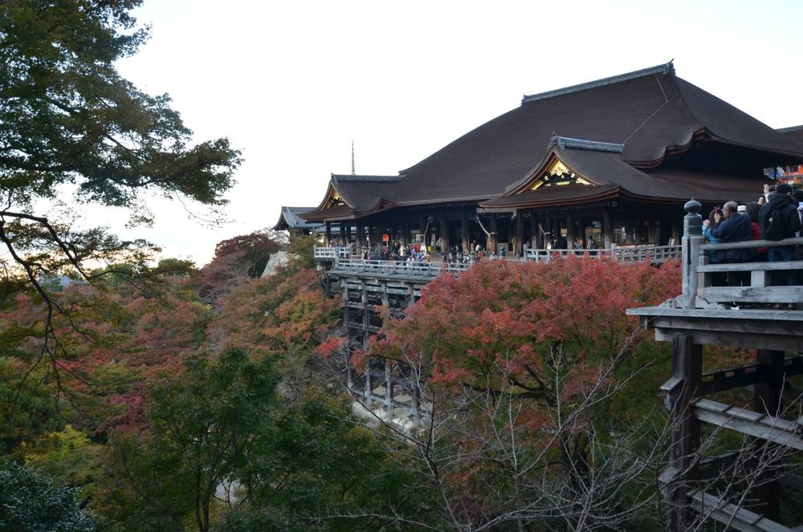
清水寺
 高台寺
高台寺
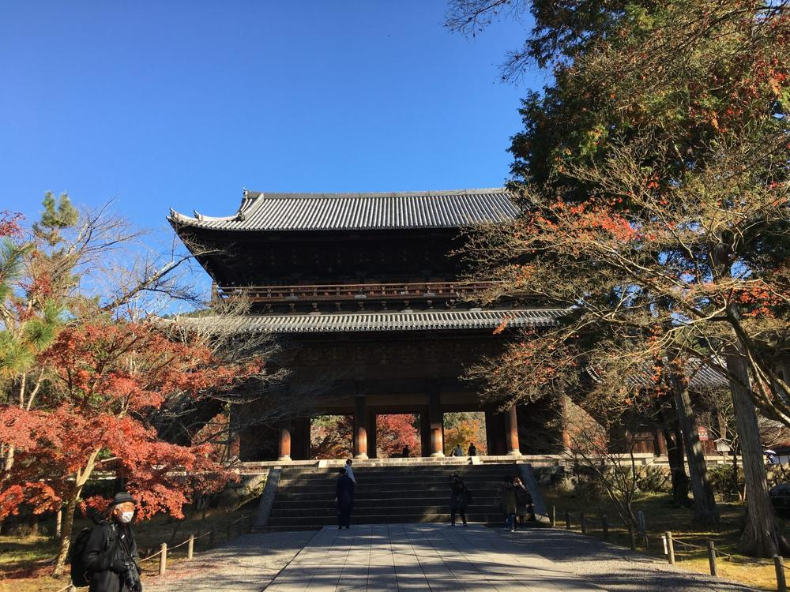
南禅寺・三門
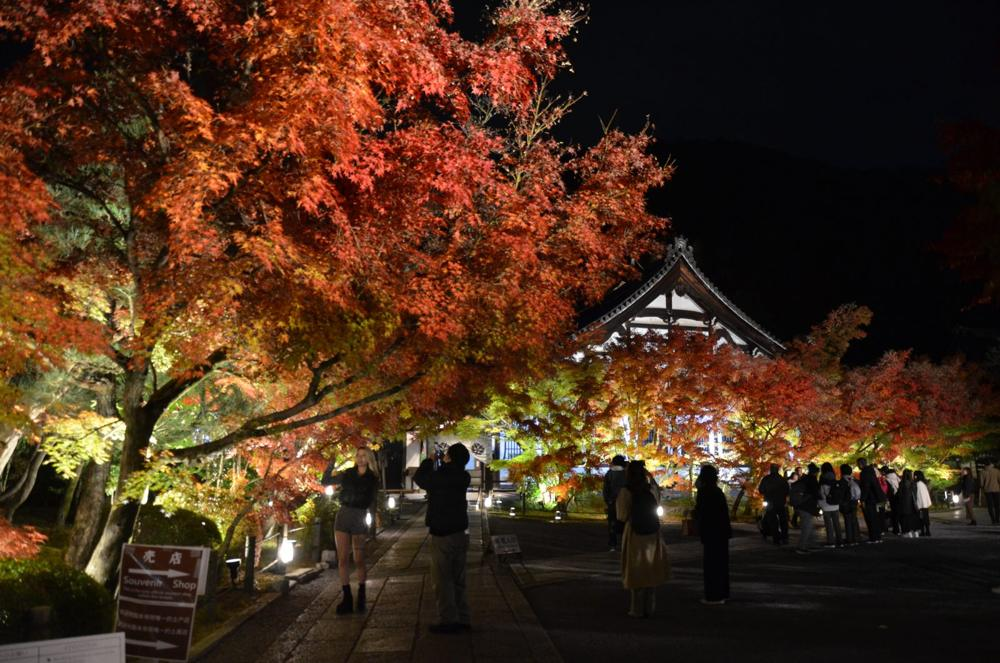
永観堂の夜
- 東福寺見頃落葉はじめ 12/6ごろ
- 清水寺見頃落葉はじめ 12/5ごろ
- 高台寺・圓徳院25日ごろ見頃入り24日は5割
- 南禅寺見頃落葉はじめ 12/4ごろ
- 永観堂見頃落葉はじめ 12/5ごろ
1日の流れ
- 烏丸 → 地下鉄で京都駅、JR奈良線で東福寺 9:25着・370円
- 東福寺 通天橋・開山堂 秋は8:30から。通天橋1,000円（本坊庭園は別に600円）。とても混むので朝いちばんに
- 市バス207東福寺 → 清水道 11:21着・230円。坂を上って約15分
- 清水寺 拝観料500円（夜間拝観と同じ額の見込み）
- 産寧坂・二年坂でお昼
- 高台寺・圓徳院 共通券1,200円。圓徳院は現金のみ
- 円山公園・知恩院の前を歩いて南禅寺へ（約35分）
- 南禅寺 三門・水路閣 境内は無料、三門600円（受付16:40まで）
- 永観堂 ライトアップ 受付17:30〜20:30・1,000円。南禅寺から歩いて約5分
- 蹴上 → 地下鉄東西線・烏丸線 → 四条 19:19 烏丸着・260円
夜を清水寺にする案も：30日（月）は清水寺の秋の夜間特別拝観の最終日（17:30ごろ〜、受付21:00まで）。その場合は南禅寺・永観堂をやめて東山に残り、帰りは清水道 20:32発の市バス → 20:51 烏丸。
東福寺の通天橋の上は、混むと立ち止まっての撮影を遠慮するよう案内されることがあります。
B庭と額縁の紅葉
一乗寺・鷹峯・北野：圓光寺 → 詩仙堂 → 源光庵 → 北野天満宮の夜
座って眺める庭の紅葉が中心。人の多さは東山より控えめ。夕方は北野天満宮のもみじ苑のライトアップへ。
- 出発
- 烏丸 9:14
- 帰り
- 烏丸 18:36着
- 交通費
- 2,040円
- 拝観料
- 約4,600円
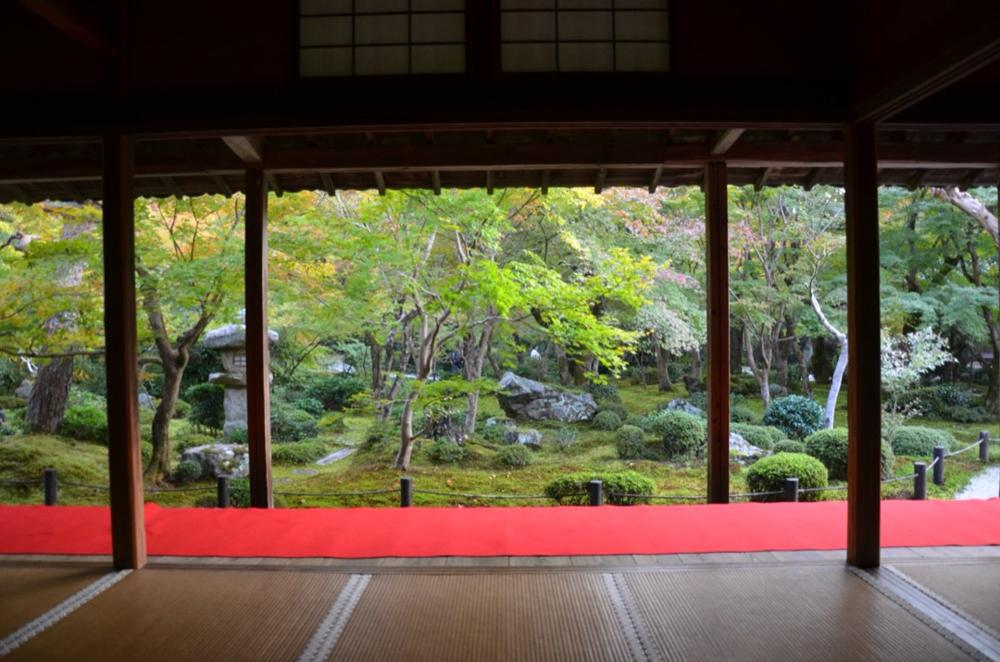
圓光寺（写真は紅葉の前）
 詩仙堂（写真は紅葉の前）
詩仙堂（写真は紅葉の前）
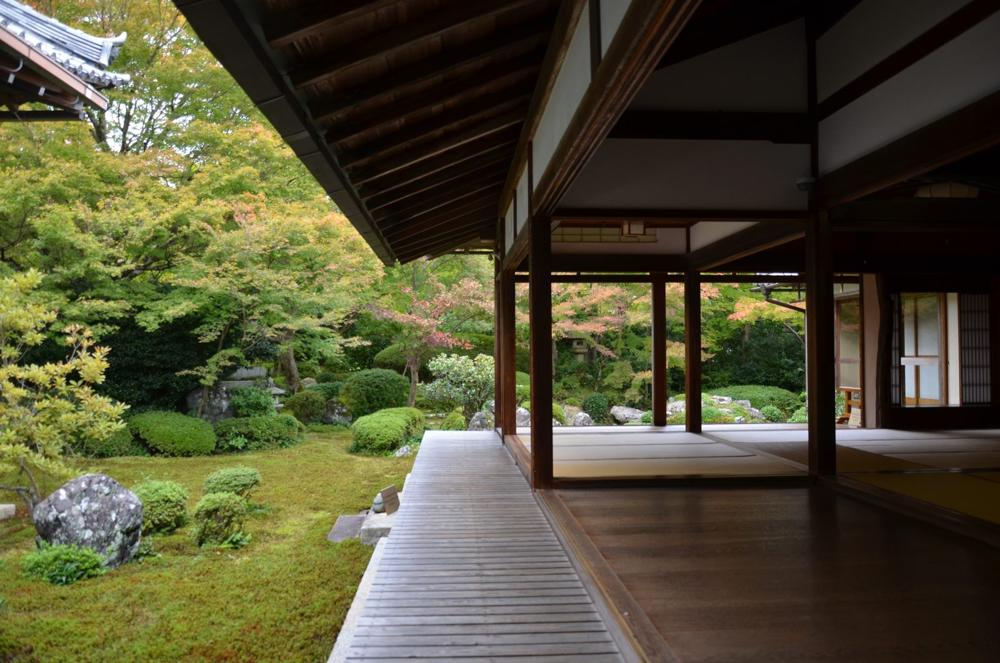
源光庵（写真は紅葉の前）
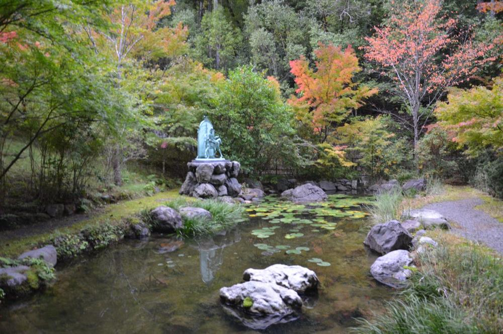
常照寺
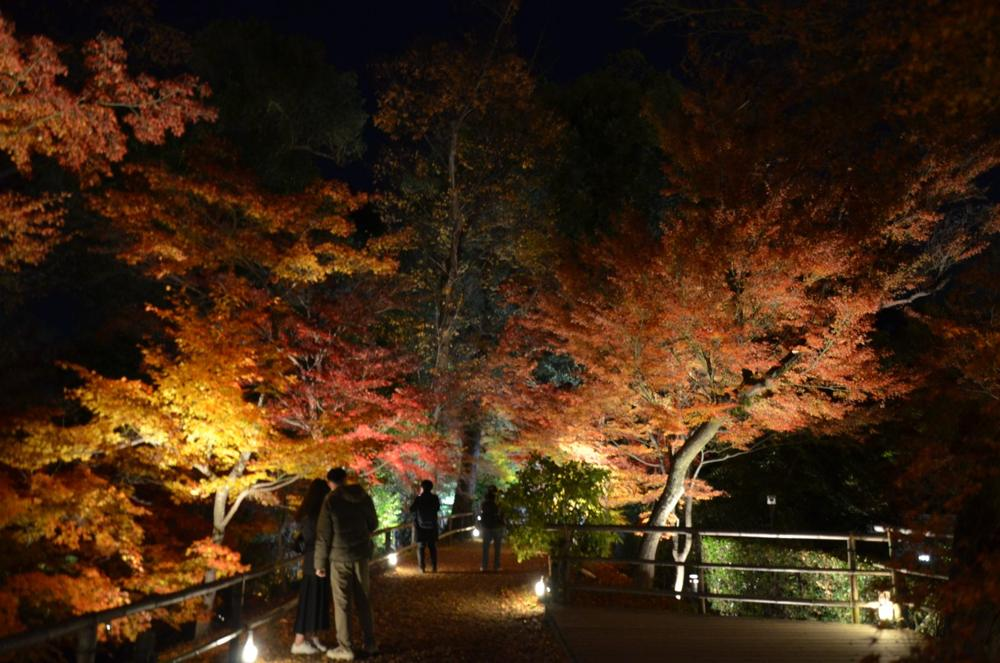
北野天満宮・もみじ苑の夜
- 圓光寺見頃落葉はじめ 12/5ごろ
- 詩仙堂見頃落葉はじめ 12/4ごろ
- 源光庵見頃の終わりかけ落葉はじめ 12/2ごろ
- 常照寺見頃落葉はじめ 12/11ごろ
- 北野天満宮 もみじ苑25日ごろ見頃入り24日は6割
1日の流れ
- 阪急で京都河原町 → 京阪 祇園四条 → 出町柳 → 叡電 9:50 一乗寺着・630円
- 圓光寺 駅から歩いて約15分。紅葉特別拝観は日時指定の予約制（1,500円）。早めに3人分を予約
- 詩仙堂 すぐ近く。700円
- 一乗寺でお昼（ラーメン屋さんが多い通り）
- 市バス北8一乗寺下り松町 → 佛教大学前、市バス6→ 鷹峯源光庵前 13:38着・460円
- 源光庵（「悟りの窓」「迷いの窓」）・常照寺 500円・400円
- 市バス6・50→ 北野天満宮前 15:33着・460円
- もみじ苑 ライトアップ 日没（16:45ごろ）〜20:00、受付19:40まで。1,500円。それまで境内と上七軒を散歩
- 市バス203→ 烏丸今出川、地下鉄で四条 18:36 烏丸着・490円
圓光寺は予約しないと入れないことがあります（空きがあれば当日も可）。このコースに決まったら、すぐ予約します。
源光庵は30日ごろが見頃の終わりかけ。散っていたら、鷹峯をやめて北野天満宮に早めに行く手もあります。
Cのんびり・近い
嵯峨野：常寂光寺 → 二尊院 → 祇王寺 → 大覚寺
山すその小さなお寺をゆっくり歩いて回る。嵐山の全体は30日ごろから散り始める予想ですが、ここで回るお寺はまだ見頃。夕方には帰れます。
- 出発
- 烏丸 9:10
- 帰り
- 烏丸 16:24着
- 交通費
- 470円
- 拝観料
- 約1,800円＋要確認
 常寂光寺（写真は紅葉の前）
常寂光寺（写真は紅葉の前）
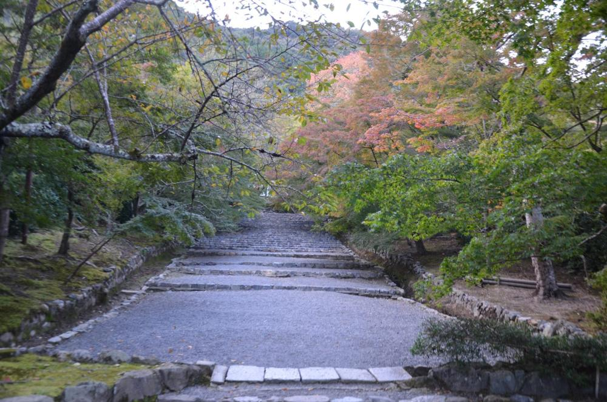
二尊院・紅葉の馬場
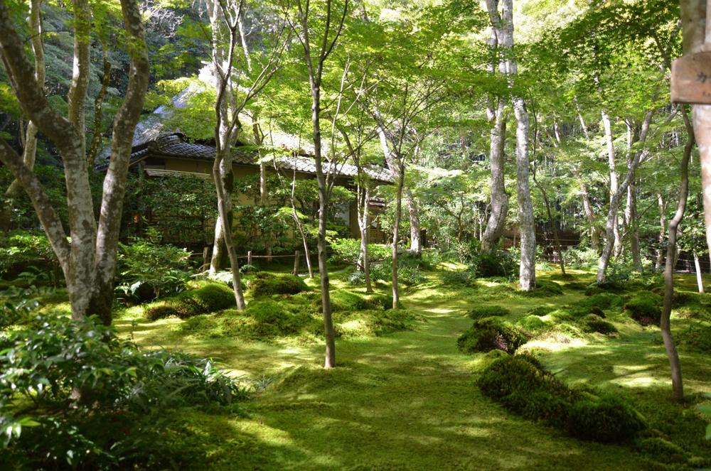
祇王寺の苔の庭
- 常寂光寺見頃落葉はじめ 12/10ごろ
- 二尊院見頃落葉はじめ 12/7ごろ
- 祇王寺25日ごろ見頃入り20日は6割
- 大覚寺25日ごろ見頃入り20日は4割
1日の流れ
- 阪急で桂、嵐山線に乗りかえ 9:33 嵐山着・240円
- 渡月橋をわたり、竹林の小径を通って歩く（約30分）
- 常寂光寺 600円。30日は「本堂特別拝観」の最終日（+600円、予約不要）
- 二尊院 600円
- 祇王寺 苔の庭と紅葉。拝観料は要確認
- 嵯峨野でお昼
- 大覚寺 大沢池 歩いて約20分。拝観料は要確認
- 市バス91大覚寺 → 四条烏丸 16:19着・230円
夜も見たければ、宝厳院のライトアップ（12/6まで、17:30〜）を足せます（宝厳院は見頃、落葉はじめ12/11ごろ）。
Dお茶の町をゆっくり
宇治：平等院 → 宇治川 → 興聖寺の琴坂 → 三室戸寺
川ぞいを歩いて、お茶とお寺の町を一日で。興聖寺の琴坂は30日ごろちょうど見頃に入る予想。夕方には帰れます。
- 出発
- 烏丸 9:19
- 帰り
- 烏丸 16:15着
- 交通費
- 1,240円
- 拝観料
- 約2,200円
- 平等院見頃落葉はじめ 12/6ごろ
- 興聖寺（琴坂）30日ごろ見頃入り24日は3割
- 三室戸寺見頃落葉はじめ 12/12ごろ（情報は19日時点）
- 宇治川ライン見頃落葉はじめ 12/8ごろ
1日の流れ
- 阪急で京都河原町 → 京阪 祇園四条 → 中書島で宇治線 9:58 宇治着・530円
- 平等院 700円。鳳凰堂の中は別に300円（現金・先着順、9:10から配布）
- 宇治川の中の島を歩いて対岸へ
- 興聖寺・琴坂 琴坂を歩くだけなら無料、拝観500円（受付10:00〜16:00）
- 宇治でお昼（茶そば・抹茶スイーツ）
- 京阪 宇治 → 三室戸（1駅）、歩いて約15分 180円
- 三室戸寺 1,000円。受付は15:10ごろまでなので早めに
- 三室戸 → 中書島 → 祇園四条 → 阪急 16:15 烏丸着・530円
宇治市植物公園は月曜休園なので、このコースには入れていません。
E遠出・夜の茅葺き書院
滋賀：三井寺 → 彦根城・玄宮園 → 夜の教林坊
琵琶湖ぞいを電車で北へ。最後は安土の教林坊で、竹林と庭のライトアップ。3か所とも見頃。移動は長め、教林坊へはタクシー。
- 出発
- 烏丸 9:06
- 帰り
- 烏丸 20:22着
- 交通費
- 3,040円＋タクシー
- 拝観料
- 約2,800円
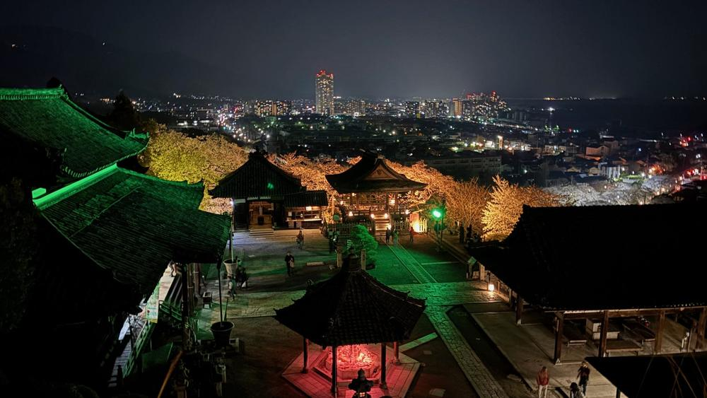
三井寺・観音堂からの眺め（写真は春の夜）
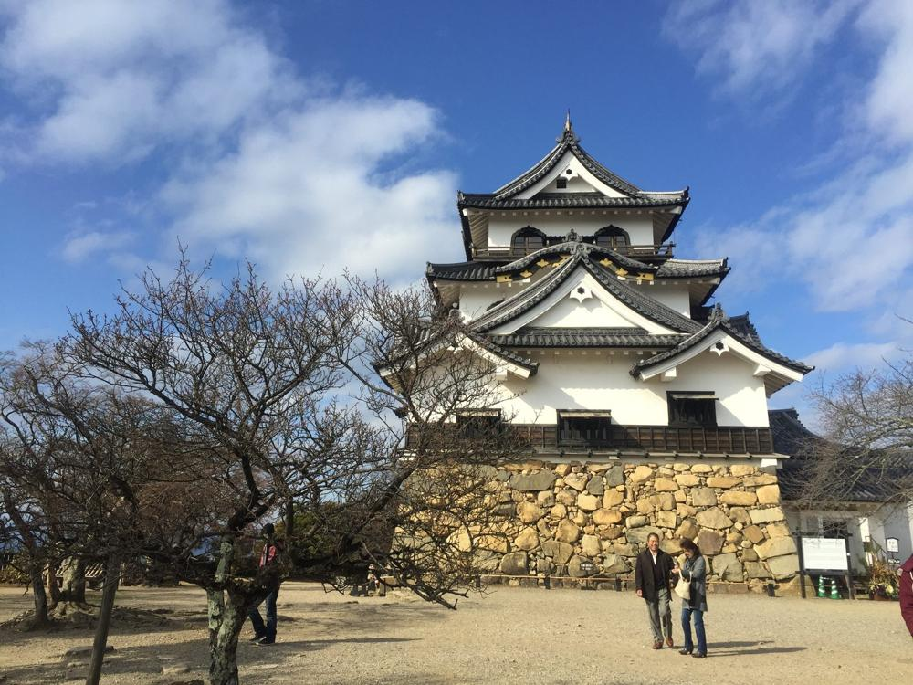
彦根城
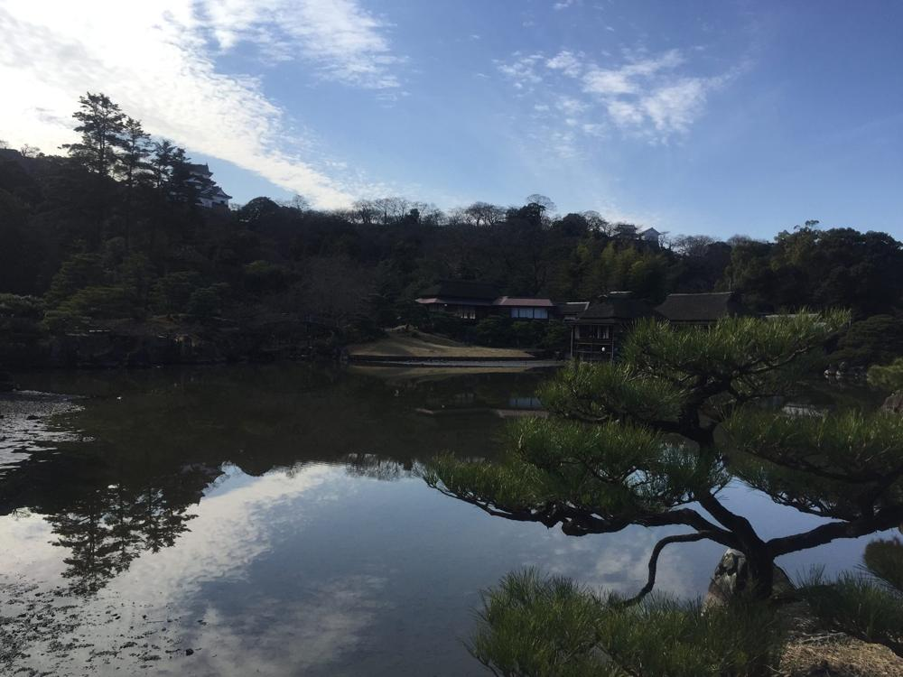
玄宮園
 教林坊の丸窓（夜）
教林坊の丸窓（夜）
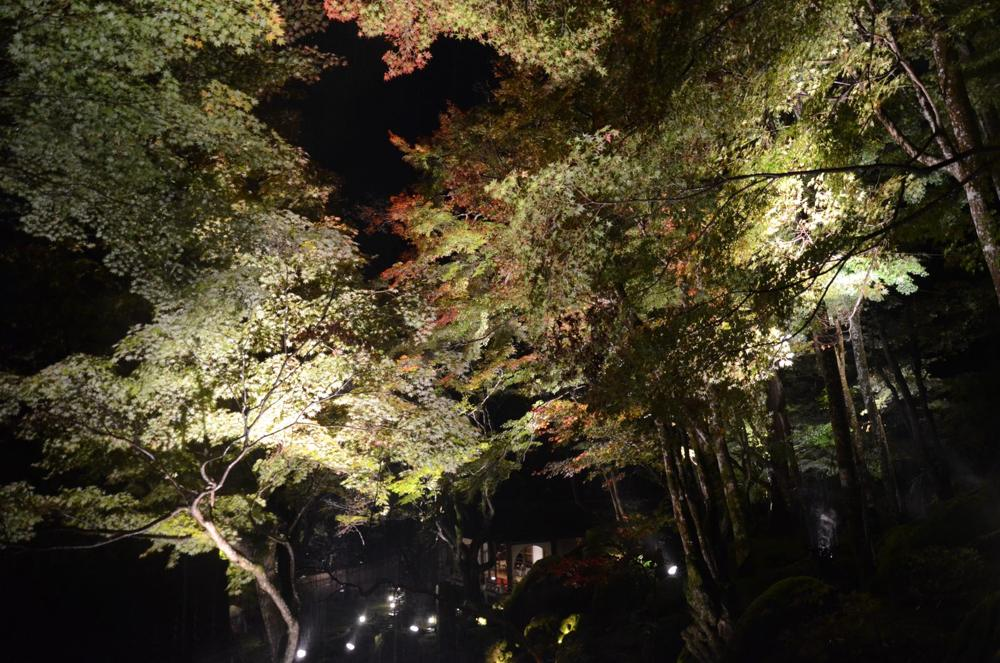
教林坊のライトアップ
- 三井寺見頃落葉はじめ 12/6ごろ
- 玄宮園25日ごろ見頃入り20日は5割
- 教林坊25日ごろ見頃入り23日は6割
1日の流れ
- 地下鉄で京都、JRで大津京、京阪石山坂本線 9:51 三井寺着・660円
- 三井寺 800円（9:00〜、受付16:00まで）。観音堂から大津の街と琵琶湖
- 京阪で京阪膳所、JR琵琶湖線 13:38 彦根着・1,060円。お昼は彦根で
- 彦根城・玄宮園 駅から歩いて約15分。1,000円（玄宮園も入れる）、入場16:30まで
- JR 彦根 → 安土 17:20着・330円。北口からタクシー約10分（片道2,500円前後）
- 教林坊 ライトアップ 17:30〜19:30（受付19:00まで）、1,000円
- タクシーで安土駅、JR琵琶湖線で京都、地下鉄 20:22 烏丸着・990円
安土駅のタクシーは台数が少ないかもしれません。帰りの迎えも含めて予約しておくと安心です（往復で1台5,000円前後、3人で割って1人約1,700円）。
湖東三山（西明寺・金剛輪寺・百済寺）も見頃ですが、紅葉シャトルバスが29日で終わるので、このコースには入れていません。
どれにする？行きたいコース（A〜E）を教えてね。決まったら、箕面のときみたいに地図つきのしおりにします。組み合わせを変えるのもOK。
ほかに30日に見頃の所（電車・バスで行ける）
- 醍醐寺・勧修寺・隨心院（山科） 見頃。落葉はじめ 12/9・12/15ごろ、隨心院は26日ごろ見頃入り。地下鉄東西線で
- 東寺 見頃、落葉はじめ12/13ごろ。夜のライトアップは12/13まで
- 京都府立植物園 見頃、落葉はじめ12/9ごろ。地下鉄 北山駅すぐ
- 毘沙門堂（山科） 見頃、落葉はじめ12/6ごろ。山科駅から歩いて約20分
- 二条城 見頃、落葉はじめ12/6ごろ。夜のライトアップは12/5まで
- 石清水八幡宮・一休寺 26日・25日ごろ見頃入り
30日より前に散り始める予想の所（嵐山の全体・浄瑠璃寺・泉涌寺・日吉大社・将軍塚）と、すでに落葉中の所（神護寺・宝泉院・比叡山など）は外しました。